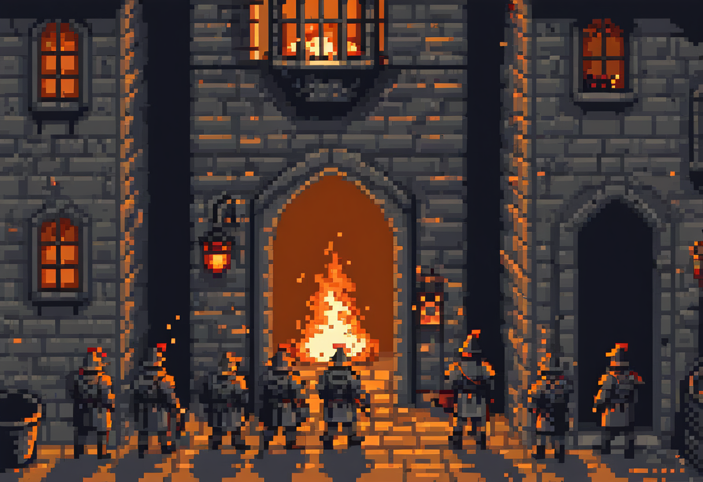

6 Incident & Disaster Planning

The question isn’t whether something will go wrong, but whether you’re ready when it does.
This is the chapter where assume breach stops being a slogan and becomes a plan. Everything so far has been about lowering the odds: hardening, controls, cryptography, spending where the risk is highest. But the honest premise of this whole book is that, sooner or later, across a large enough system and enough time, a defence fails and something gets through. The organisations that survive that moment are not the ones that believed it couldn’t happen; they’re the ones that decided in advance what they would do when it did. Planning for failure is the most practical form of optimism there is.
6.1 What this chapter covers
By the end you should be able to:
- Distinguish incident response, business continuity, and disaster recovery.
- Explain RTO and RPO and why they drive the plan.
- Describe what a good incident response process looks like (detect → respond → recover → learn).
- Explain the role of backups, alternate sites, and testing the plan.
6.2 When prevention runs out
A defender who assumes they can keep every attacker out will, reasonably, put every dollar into prevention and none into what happens after. That is a trap. Prevention has a ceiling. Zero-days exist, people slip, controls fail. Past that ceiling, the only thing that helps is preparation to respond. This is why the security lifecycle has a second half: because you assumed breach, you build detection, response, and recovery before you need them, when you’re calm and thinking clearly, rather than inventing them at 3 a.m. during the worst day of the company’s year.
6.3 Incident response: the lifecycle
An incident is a security event that matters: a confirmed compromise, a breach, an outage caused by an attack. Incident response is the disciplined process of handling it, and a good process runs through recognisable stages:
- Detect. You cannot respond to what you cannot see, which is why monitoring and logging, covered in the network chapter, exist. The faster you detect, the less damage is done. The time an attacker sits undiscovered (“dwell time”) is often measured in weeks, and every day of it costs.
- Respond. Contain the incident before it spreads: isolate the affected systems, cut the attacker’s access, stop the bleeding. This is triage: the goal is to limit the damage, not yet to understand every detail.
- Recover. Restore normal operations safely: rebuild compromised systems (remember the rootkit: deeply compromised machines are rebuilt, not cleaned), restore data, and verify the attacker is gone before reconnecting.
- Learn. This is the stage everyone skips and no one should. Afterwards, honestly review what happened, what worked, and what didn’t, then feed those lessons back into your defences. An incident you learn nothing from is one you’ve paid for twice.
Two things make or break response in practice, and neither is technical. Roles must be decided in advance (who declares an incident, who talks to whom, who has the authority to take a critical system offline), because a crisis is the worst possible time to be working out the org chart. And communication must be planned: internal coordination, and the harder question of what you tell customers, regulators, and the public, and when.
6.4 Business continuity and disaster recovery
Two related disciplines sit alongside incident response, and people constantly confuse them.
Business continuity is the big picture: keeping the organisation running during a serious disruption of any kind, not just a cyberattack. If the office floods, the payroll system dies, or ransomware locks every file, how does the business keep serving customers and paying staff? It covers people, processes, premises, and priorities, the whole organisation’s ability to function through a crisis.
Disaster recovery is the technical subset of that: restoring the IT systems and data after they’ve been lost or damaged. Business continuity asks “how does the company keep operating?”; disaster recovery asks “how do we get the systems and data back?” Recovery serves continuity (you restore the systems so the business can continue), but they are not the same plan, and an organisation needs both.
6.5 The two numbers that drive the plan: RTO and RPO
Disaster recovery turns on two deceptively simple targets, and getting them straight is the most useful thing in this chapter.
Recovery Time Objective (RTO) is how long you can afford to be down: the maximum tolerable time to get a system back before the harm becomes unacceptable. A trading platform’s RTO might be minutes; an internal wiki’s might be days.
Recovery Point Objective (RPO) is how much data you can afford to lose: the maximum tolerable gap between your last good backup and the moment of failure. An RPO of one hour means you can lose at most an hour’s work; an RPO of a day means losing a day’s is acceptable.
The RPO, in particular, dictates your backup schedule. This is where plans contradict themselves. If a company declares an RPO of one hour but backs up only once a night, the plan is broken on its face: a failure just before the nightly backup could lose nearly twenty-four hours of data, not one. The stated goal and the actual practice don’t match, and no one notices until the day it matters. (That mismatch is the second question at the end. It’s a trap worth internalising, because real organisations fall into it constantly.)
6.6 Backups and alternate sites
Backups are the foundation of recovery, and the durable rule of thumb is 3-2-1: keep at least three copies of important data, on two different types of media, with one kept off-site (or offline). The off-site, offline copy is the one that matters most against modern threats. Ransomware that can reach your backups can encrypt them too, and a backup the attacker can also destroy is no backup at all. This is the concrete payoff of the ransomware threat from the malware chapter: the organisation with good, tested, isolated backups can refuse to pay and restore; the one without them is at the attacker’s mercy.
For systems that can’t tolerate much downtime, recovery relies on an alternate site, a second location ready to take over. These come in flavours by cost and readiness: a hot site is fully equipped and running, ready in minutes; a cold site is just space and power you’d have to build out, cheap but slow; a warm site sits in between. Which you choose is a risk-and-cost decision: the cost-benefit reasoning of the previous chapter, applied to recovery.
6.7 The clock and the crowd
A modern breach is a legal and reputational problem as much as a technical one, and both run on clocks. Many jurisdictions now have mandatory breach-notification rules. The best-known, the EU’s General Data Protection Regulation (GDPR), requires reporting certain breaches within 72 hours. Recovery happens under a regulatory deadline, with penalties for silence. Meanwhile the crowd (customers, staff, media, regulators) wants to know what happened, and how you communicate under pressure can matter as much as the technical fix. Handled well, honest and timely disclosure preserves trust; handled badly, a cover-up turns a breach into a scandal.
The sharpest version of this pressure is the ransom decision: pay the attacker for the decryption key, or refuse? It looks like a simple cost calculation, but it is not. Paying funds criminal enterprises and may be illegal, offers no guarantee the data comes back, and marks you as willing to pay again. Refusing may mean a longer, costlier recovery, bearable only if your backups are good. There is rarely a clean answer, which is why it must be thought through before the moment arrives, not decided in a panic with the clock running.
6.8 Testing the plan
One rule outweighs all the rest: an untested plan is only a hope. Recovery plans fail at the moment they’re needed for depressingly ordinary reasons: the backups were running but never restored-tested and turned out to be corrupt; the recovery documentation was itself on the system that went down; the one person who knew the process had left. Every one of these is caught by rehearsing: restoring from backups for real, running tabletop exercises, walking the team through the crisis while it’s still hypothetical. The organisations that recover smoothly are the ones that practised; the ones that discover their plan’s flaws during the real disaster paid the worst possible price for the lesson.
Incident Zero has two modules that live in this chapter. Incident Response races you to uncover a hidden attack chain before time and budget run out; Disaster Recovery drops you into a live breach with a 72-hour notification clock and the ransom decision on the table. Reading about incident response is one thing; running one against a clock is another. → incidentzero.retroverse.studio
6.9 Where this connects
This chapter is what you do when a risk from risk management happens anyway, and the hot, warm, and cold-site choice is that chapter’s cost-benefit reasoning applied. Once an incident is contained, the investigation of how it happened is a discipline of its own, taken up in cybercrime, botnets and forensics. And the breach-notification obligations here are grounded in the data-protection law of web security and data protection.
6.10 Questions to consider
- What’s the difference between business continuity and disaster recovery? Give an example of each.
- A company backs up nightly. Their RPO is “no more than one hour of data lost.” What’s wrong, and what would you change?
- Why do so many disaster-recovery plans fail at the moment they’re needed? What single practice would most reduce that?